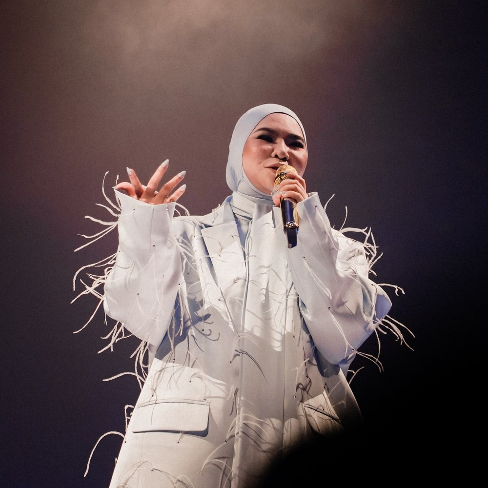

Malaysia
Artist

Aina Abdul
Nurul Aina Abdul Ghani
b. 1993
📍 Johor Bahru
In 2024, she won Malaysia's Most Popular Star award after receiving nearly 9 million fan votes.
She is known for her extravagant outfits. In 2020, she won the Malaysian version of The Masked Singer, performing in a hibiscus costume. In 2026, she performed in a volcano-inspired dress made using 5 kilograms of real charcoal.
Country
Song
Bluest Sky
Recording the vocals for “Bluest Sky” took around 10 hours instead of Aina's usual two.
Although the song is less than three minutes long, its elaborate orchestral arrangement features hundreds of instrumental tracks.
In the music video, Aina appears on a beach carrying a flaming torch and sets a painting on fire. Her unusual black dress, designed by Melinda Looi, was inspired by a Siamese fighting fish.
Bluest Sky
| This love feels like | This love feels like |
| Like the water | Water |
| Spilling over, oh, like a river | Overflowing, oh, like a river. |
| Those eyes, those stares | Those eyes, those gazes |
| Feels like a symphony | Feel like a symphony, |
| Plucking each note like a violin | Each note plucked like a violin string. |
| Remember the warmth from my fingers | Remember the warmth of my fingers |
| Running through your hair | Running through your hair? |
| Remember the silence when we had nothing to say | Remember the silence when we had nothing to say? |
| If time could turn back | If we could turn back time, |
| Would you come running like you did before? | Would you come running to me like you did before? |
| Would you still carve my name in your deepest heart? | Would you still keep my name engraved deep within your heart? |
| If this is love, then why does it feel so drowning? | If this is love, why does it feel like I'm drowning? |
| If this is love, why does it feel like a burden? | If this is love, why does it feel like such a burden? |
| Like a heartache? | Like a heartache? |
| Tenggelamkan sedihku | Drown my sadness, |
| Terapungkan bahagiaku | Let my happiness rise to the surface. |
| Di kala bulan berbisik rindu | When the moon whispers of longing, |
| Aku rindu | I long for you. |
| If this is love, then why does it feel so drowning? | If this is love, why does it feel like I'm drowning? |
| If this is love, then why does it feel like a burden? | If this is love, why does it feel like such a burden? |
| I lose myself in | I lose myself |
| In your bluest sky | In your bluest sky. |
| If losing myself means finding you | If losing myself means finding you, |
| Then I don't want this to be over | Then I don't want this to be over. |